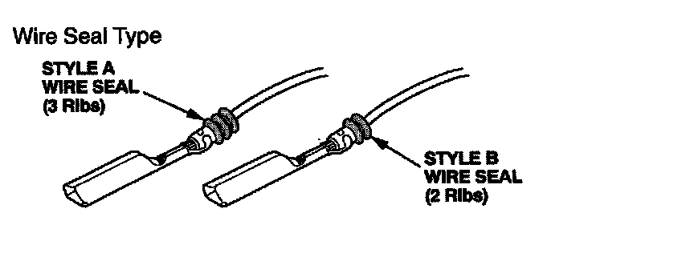

Pigtail Terminal Selection Chart
PIGTAIL TERMINAL SELECTION CHARTSelect the proper size pigtail terminal by matching the replacement terminal part number and the wire size being repaired to the corresponding pigtail terminal part number. Then use the color (size) splice connector listed. In some instances you may also have to match the wire seal style to select the proper pigtail terminal. Pigtail terminals are available through your parts department, in quantities of 10, using normal parts ordering procedures.
